High_sierras
Example 0 (amepip, gcrfin)
Example 1 (clanut)
Example 2 (clanut, daejun)
Example 3 (gcrfin, whcspa)
Example 4 (daejun, whcspa)
Example 5 (amepip, gcrfin, whcspa)
Example 6 (amepip, whcspa)
Example 7 (daejun)
Example 8 (clanut, rocwre)
Example 9 (herthr, whcspa)
Example 10 (herthr, whcspa)
Example 11 (amepip, gcrfin, whcspa)
Example 12 (clanut, herthr)
| Mixture |
Power = -36.33 dB |
|||||||
|---|---|---|---|---|---|---|---|---|
| Method | Separated source 0 | Separated source 1 | Separated source 2 | Separated source 3 | Separated source 4 | Separated source 5 | Separated source 6 | Separated source 7 |
| XC M=4 |
_XC_M=4_sep0.png)
Power = -42.45 dB |
_XC_M=4_sep1.png)
Power = -48.61 dB |
Power = -44.67 dB |
_XC_M=4_sep3.png)
Power = -42.51 dB | ||||
| XC M=8 |
_XC_M=8_sep0.png)
Power = -42.45 dB |
Power = -48.54 dB |
_XC_M=8_sep2.png)
Power = -62.85 dB |
Power = -60.17 dB |
_XC_M=8_sep4.png)
Power = -45.41 dB |
_XC_M=8_sep5.png)
Power = -48.94 dB |
_XC_M=8_sep6.png)
Power = -48.06 dB |
_XC_M=8_sep7.png)
Power = -50.55 dB |
| Mixture |
Power = -39.73 dB |
|||||||
|---|---|---|---|---|---|---|---|---|
| Method | Separated source 0 | Separated source 1 | Separated source 2 | Separated source 3 | Separated source 4 | Separated source 5 | Separated source 6 | Separated source 7 |
| XC M=4 |
Power = -61.48 dB |
Power = -47.32 dB |
Power = -48.83 dB |
Power = -43.30 dB | ||||
| XC M=8 |
Power = -61.70 dB |
_XC_M=8_sep1.png)
Power = -51.32 dB |
Power = -59.49 dB |
_XC_M=8_sep3.png)
Power = -54.85 dB |
Power = -49.66 dB |
_XC_M=8_sep5.png)
Power = -61.77 dB |
_XC_M=8_sep6.png)
Power = -43.38 dB |
_XC_M=8_sep7.png)
Power = -62.41 dB |
| Mixture |
Power = -28.07 dB |
|||||||
|---|---|---|---|---|---|---|---|---|
| Method | Separated source 0 | Separated source 1 | Separated source 2 | Separated source 3 | Separated source 4 | Separated source 5 | Separated source 6 | Separated source 7 |
| XC M=4 |
Power = -62.31 dB |
Power = -48.87 dB |
Power = -53.27 dB |
Power = -28.21 dB | ||||
| XC M=8 |
Power = -62.49 dB |
Power = -75.32 dB |
_XC_M=8_sep2.png)
Power = -51.46 dB |
Power = -62.87 dB |
Power = -68.09 dB |
Power = -56.30 dB |
Power = -53.44 dB |
Power = -28.20 dB |
| Mixture |
Power = -23.56 dB |
|||||||
|---|---|---|---|---|---|---|---|---|
| Method | Separated source 0 | Separated source 1 | Separated source 2 | Separated source 3 | Separated source 4 | Separated source 5 | Separated source 6 | Separated source 7 |
| XC M=4 |
Power = -66.03 dB |
Power = -23.86 dB |
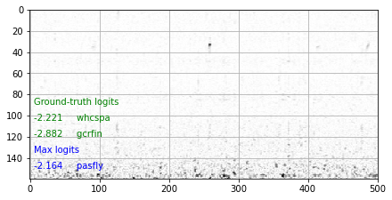
Power = -42.44 dB |
Power = -53.01 dB | ||||
| XC M=8 |
_XC_M=8_sep0.png)
Power = -70.51 dB |
Power = -70.61 dB |
Power = -23.82 dB |
Power = -64.90 dB |
_XC_M=8_sep4.png)
Power = -57.91 dB |
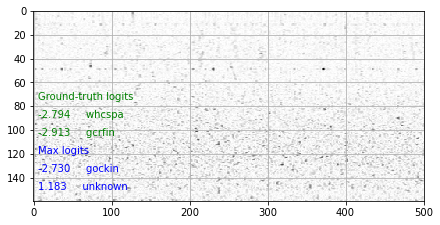
Power = -66.53 dB |
Power = -42.90 dB |
Power = -57.02 dB |
| Mixture |
Power = -34.93 dB |
|||||||
|---|---|---|---|---|---|---|---|---|
| Method | Separated source 0 | Separated source 1 | Separated source 2 | Separated source 3 | Separated source 4 | Separated source 5 | Separated source 6 | Separated source 7 |
| XC M=4 |
Power = -64.14 dB |
Power = -62.13 dB |
Power = -43.55 dB |
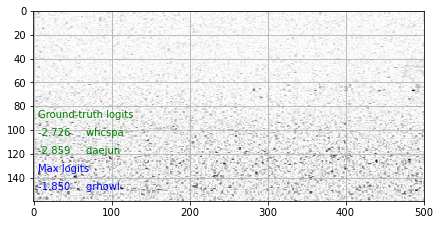
Power = -36.98 dB | ||||
| XC M=8 |
Power = -62.18 dB |
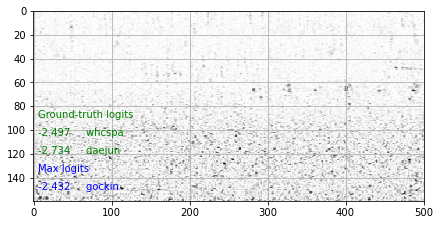
Power = -54.86 dB |
Power = -62.41 dB |
Power = -54.90 dB |
Power = -41.18 dB |
Power = -45.25 dB |
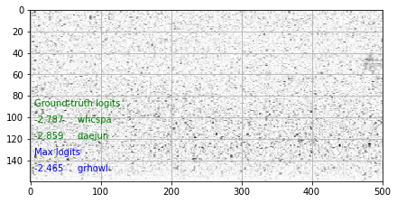
Power = -45.88 dB |
Power = -50.00 dB |
Example 5 (amepip, gcrfin, whcspa)
| Mixture |
Power = -32.04 dB |
|||||||
|---|---|---|---|---|---|---|---|---|
| Method | Separated source 0 | Separated source 1 | Separated source 2 | Separated source 3 | Separated source 4 | Separated source 5 | Separated source 6 | Separated source 7 |
| XC M=4 |
Power = -41.23 dB |
Power = -54.55 dB |
Power = -33.64 dB |
Power = -41.38 dB | ||||
| XC M=8 |
Power = -41.55 dB |
Power = -56.31 dB |
Power = -54.38 dB |
Power = -47.76 dB |
Power = -65.65 dB |
Power = -33.61 dB |
Power = -47.73 dB |
Power = -48.52 dB |
| Mixture |
Power = -32.04 dB |
|||||||
|---|---|---|---|---|---|---|---|---|
| Method | Separated source 0 | Separated source 1 | Separated source 2 | Separated source 3 | Separated source 4 | Separated source 5 | Separated source 6 | Separated source 7 |
| XC M=4 |
Power = -41.23 dB |
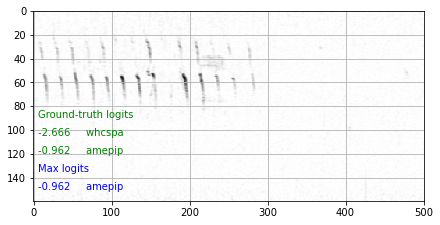
Power = -54.55 dB |
Power = -33.64 dB |
Power = -41.38 dB | ||||
| XC M=8 |
Power = -41.55 dB |
_XC_M=8_sep1.png)
Power = -56.31 dB |
Power = -54.38 dB |
Power = -47.76 dB |
Power = -65.65 dB |
Power = -33.61 dB |
Power = -47.73 dB |
_XC_M=8_sep7.png)
Power = -48.52 dB |
| Mixture |
_mix.png)
Power = -26.49 dB |
|||||||
|---|---|---|---|---|---|---|---|---|
| Method | Separated source 0 | Separated source 1 | Separated source 2 | Separated source 3 | Separated source 4 | Separated source 5 | Separated source 6 | Separated source 7 |
| XC M=4 |
Power = -60.66 dB |
Power = -49.44 dB |
_XC_M=4_sep2.png)
Power = -59.55 dB |
Power = -26.56 dB | ||||
| XC M=8 |
Power = -60.61 dB |
Power = -56.30 dB |
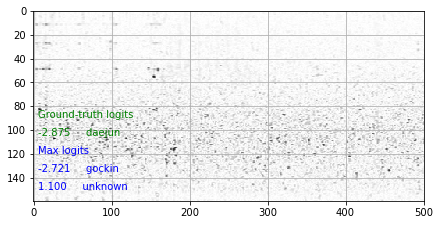
Power = -61.82 dB |
Power = -65.61 dB |
Power = -53.66 dB |
Power = -73.64 dB |
Power = -60.71 dB |
Power = -26.57 dB |
| Mixture |
Power = -37.24 dB |
|||||||
|---|---|---|---|---|---|---|---|---|
| Method | Separated source 0 | Separated source 1 | Separated source 2 | Separated source 3 | Separated source 4 | Separated source 5 | Separated source 6 | Separated source 7 |
| XC M=4 |
Power = -67.20 dB |
Power = -38.40 dB |
Power = -50.49 dB |
Power = -48.09 dB | ||||
| XC M=8 |
Power = -73.82 dB |
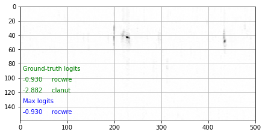
Power = -68.82 dB |
Power = -52.24 dB |
Power = -62.17 dB |
Power = -56.48 dB |
Power = -58.63 dB |
Power = -38.39 dB |
Power = -50.66 dB |
| Mixture |
Power = -36.65 dB |
|||||||
|---|---|---|---|---|---|---|---|---|
| Method | Separated source 0 | Separated source 1 | Separated source 2 | Separated source 3 | Separated source 4 | Separated source 5 | Separated source 6 | Separated source 7 |
| XC M=4 |
Power = -45.90 dB |
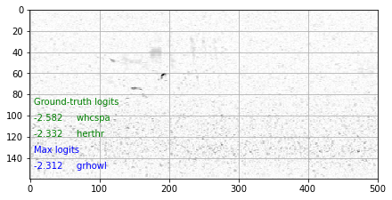
Power = -39.55 dB |
Power = -43.71 dB |
_XC_M=4_sep3.png)
Power = -52.79 dB | ||||
| XC M=8 |
Power = -48.90 dB |
Power = -50.80 dB |
Power = -57.44 dB |
Power = -44.04 dB |
Power = -42.27 dB |
Power = -50.70 dB |
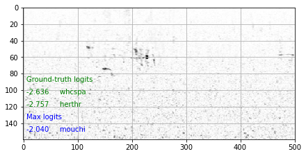
Power = -57.64 dB |
Power = -47.70 dB |
| Mixture |
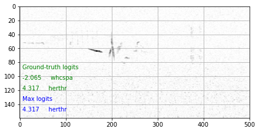
Power = -36.79 dB |
|||||||
|---|---|---|---|---|---|---|---|---|
| Method | Separated source 0 | Separated source 1 | Separated source 2 | Separated source 3 | Separated source 4 | Separated source 5 | Separated source 6 | Separated source 7 |
| XC M=4 |
Power = -46.64 dB |
Power = -40.50 dB |
Power = -43.29 dB |
Power = -51.36 dB | ||||
| XC M=8 |
Power = -46.96 dB |
_XC_M=8_sep1.png)
Power = -58.39 dB |
Power = -51.62 dB |
Power = -43.57 dB |
_XC_M=8_sep4.png)
Power = -67.84 dB |
_XC_M=8_sep5.png)
Power = -43.24 dB |
Power = -48.43 dB |
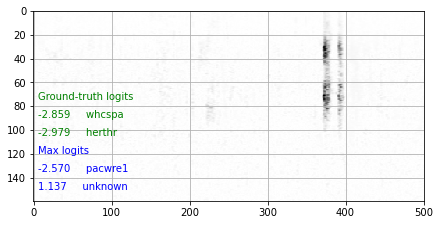
Power = -62.59 dB |
Example 11 (amepip, gcrfin, whcspa)
| Mixture |
Power = -37.09 dB |
|||||||
|---|---|---|---|---|---|---|---|---|
| Method | Separated source 0 | Separated source 1 | Separated source 2 | Separated source 3 | Separated source 4 | Separated source 5 | Separated source 6 | Separated source 7 |
| XC M=4 |
Power = -44.84 dB |
Power = -54.13 dB |
_XC_M=4_sep2.png)
Power = -46.57 dB |
Power = -40.77 dB | ||||
| XC M=8 |
Power = -57.69 dB |
Power = -44.99 dB |
Power = -51.04 dB |
Power = -59.94 dB |
Power = -56.21 dB |
Power = -48.11 dB |
Power = -45.24 dB |
Power = -44.89 dB |
| Mixture |
Power = -26.15 dB |
|||||||
|---|---|---|---|---|---|---|---|---|
| Method | Separated source 0 | Separated source 1 | Separated source 2 | Separated source 3 | Separated source 4 | Separated source 5 | Separated source 6 | Separated source 7 |
| XC M=4 |
Power = -66.73 dB |
Power = -51.60 dB |
Power = -53.43 dB |
Power = -26.24 dB | ||||
| XC M=8 |
Power = -67.65 dB |
Power = -74.40 dB |
Power = -51.77 dB |
Power = -63.66 dB |
Power = -57.30 dB |
Power = -69.09 dB |
Power = -55.26 dB |
Power = -26.30 dB |